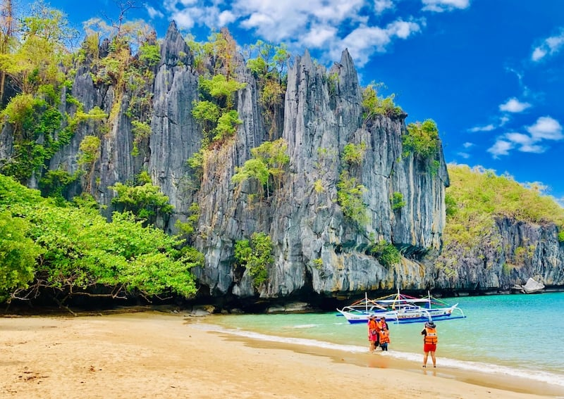

BORACAY
Boracay Island is a small island located in the Western Visayas region of the Philippines. It is one of the country's most popular tourist destinations, known for its beautiful white sandy beaches, crystal-clear waters, and vibrant nightlife.Boracay Island is just seven kilometers long and one kilometer wide, but it is packed with fun-filled activities and amazing sights. The island's main attraction is its beaches. Water activities are also a popular attraction on Boracay Island. The crystal-clear waters of the island offer a perfect playground for snorkeling, diving, and island hopping. The island is home to many dive shops offering courses for both beginners and experienced divers. Visitors can explore the vibrant marine life and coral gardens that thrive in the waters surrounding the island. Boracay Island's nightlife is also a must-see attraction. The island is famous for its beach parties and lively bars. Visitors can enjoy a cold drink while listening to live music or dancing the night away. Many bars and restaurants offer happy hour promos and drink specials, making it easy to party on a budget.Boracay Island may be small, but it is packed with unforgettable experiences. From its pristine beaches to its vibrant nightlife, there is something for everyone on this paradise island. So pack your bags, put on your sunscreen, and get ready for an unforgettable adventure on Boracay Island!

PALAWAN
El Nido really is a magical place. From its ageless towering marble cliffs to its white sandy beaches with crystal clear water, many refer to it as paradise. There are over 50 beaches to discover, so many in fact that sometimes you feel as if you are on your own secluded private beach. You will also find enchanting lagoons with tranquil turquoise-green water, caves that can take you to hidden beaches, and a very diverse variety of wildlife. El Nido is a top destination for island hopping, book your boat, take some food, some drinks in a cool box and disappear into the heavenly marine reserve that is Bacuit Bay. It is a truly relaxing and inspiring place; Alex Garland wrote "The Beach" while living here. Scuba diving is also a popular activity here with over 30 dive sites for varying levels and skills; from taking the plunge and learning to dive for the first time, to perfecting your expertise and advancing your qualifications.Yet El Nido has so many different treasures to offer beyond the obvious. Further activities available include cliff climbing, waterfalls, kayaking, cave exploration, windsurfing, plus you can also hire a motorbike and discover the surrounding north of Palawan.

MAC ARTHUR
The MacArthur Leyte Landing Memorial National Park (also known as the Leyte Landing Memorial Park and MacArthur Park) is a protected area of the Philippines that commemorates the historic landing of General Douglas MacArthur in Leyte Gulf at the start of the campaign to recapture and liberate the Philippines from Japanese occupation on 20 October 1944. This event led to the largest naval battle of World War II (Also the world's largest naval battle in terms of gross tonnage sunk) and Japan's eventual defeat and surrender after almost three years. The war memorial is located in the municipality of Palo on Leyte island in Eastern Visayas and is one of the region's major tourist attractions.